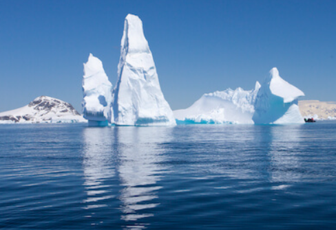
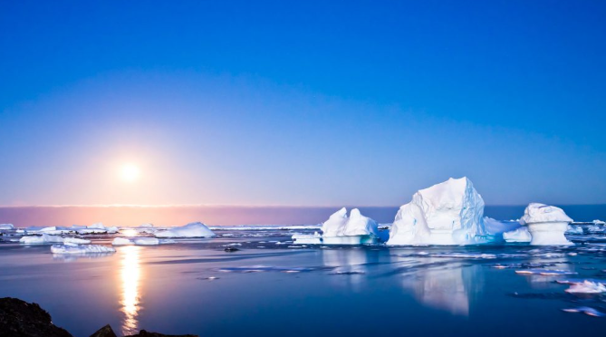

The Anatartic Ocean
The Southern Ocean, also known as the Antarctic Ocean,[1][note 4] comprises the southernmost waters of the world ocean.


Anatartic ocean
its profound effect on the Earth's climate and ocean systems.